從入門到批判，九個知識分類構成完整的閱讀動線；第十類「分析工具」在下一節，是三個可以自己動手算的工具。每一分類皆可用下拉選單篩選細項。
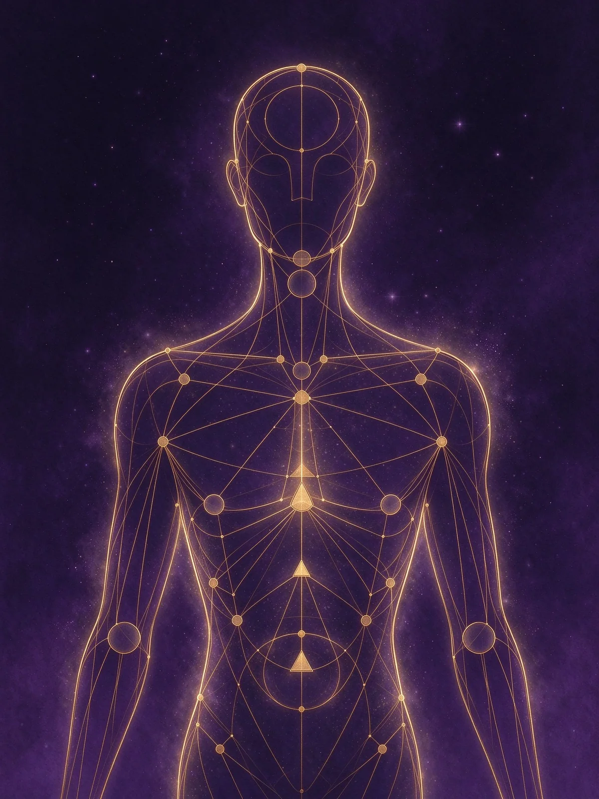
從 1987 年的起源說起，把體圖的五個零件與四大來源講清楚。
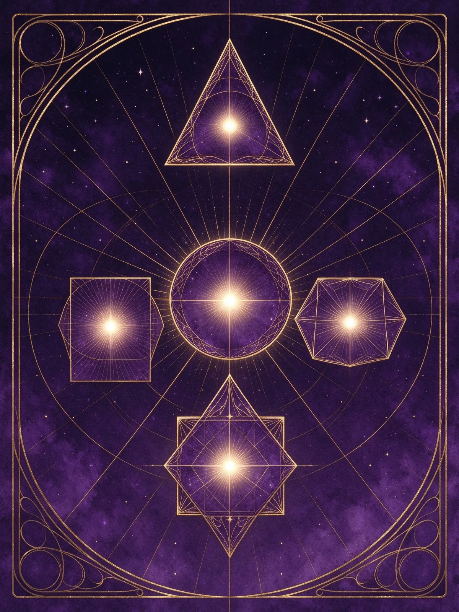
生產者、顯示生產者、投射者、顯示者、反映者：五種能量場的用法。
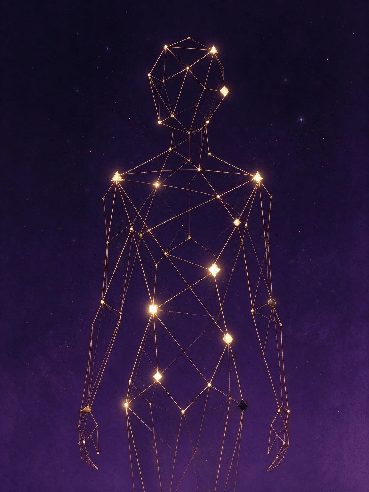
有定義的地方是定數，空白的地方是你向世界學習的入口。
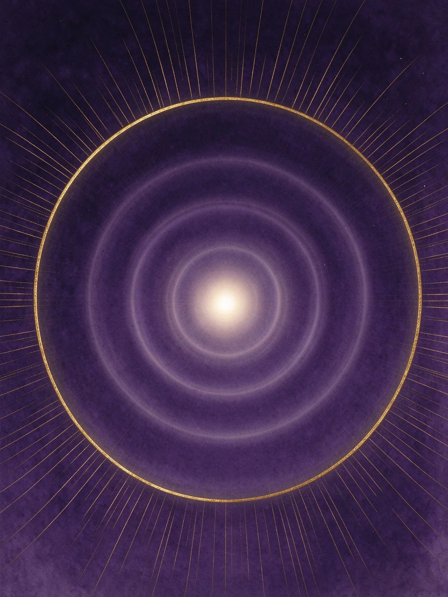
七種權威的優先順序，以及把決定交給身體的具體做法。
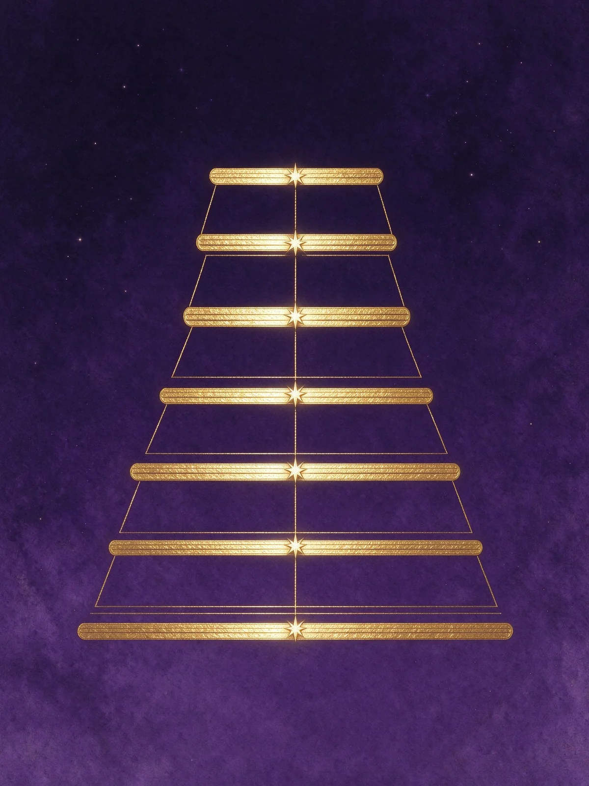
十二種剖面與六條爻線，描述你學會一件事的路徑。
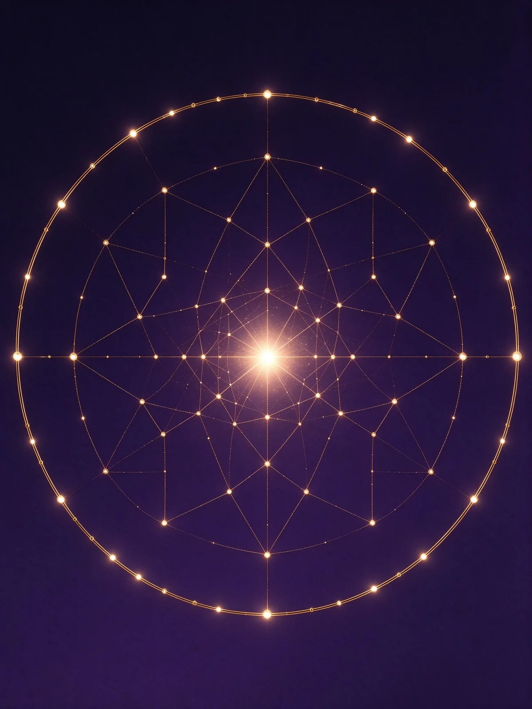
六十四卦 × 人類圖關鍵詞 × 九個中心的完整對照表。
通道如何串成五大迴路，決定你的能量集中在哪裡。
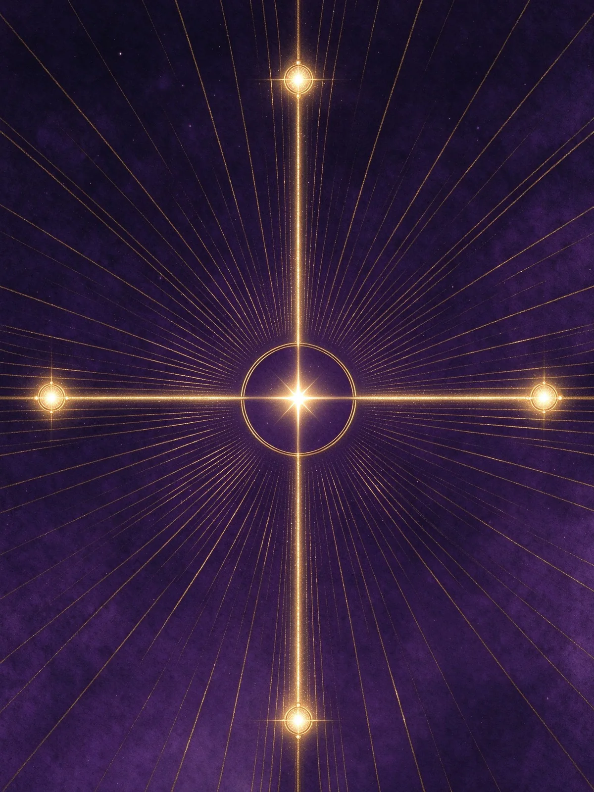
四個閘門組成的人生主題，以及右左並列的差異。
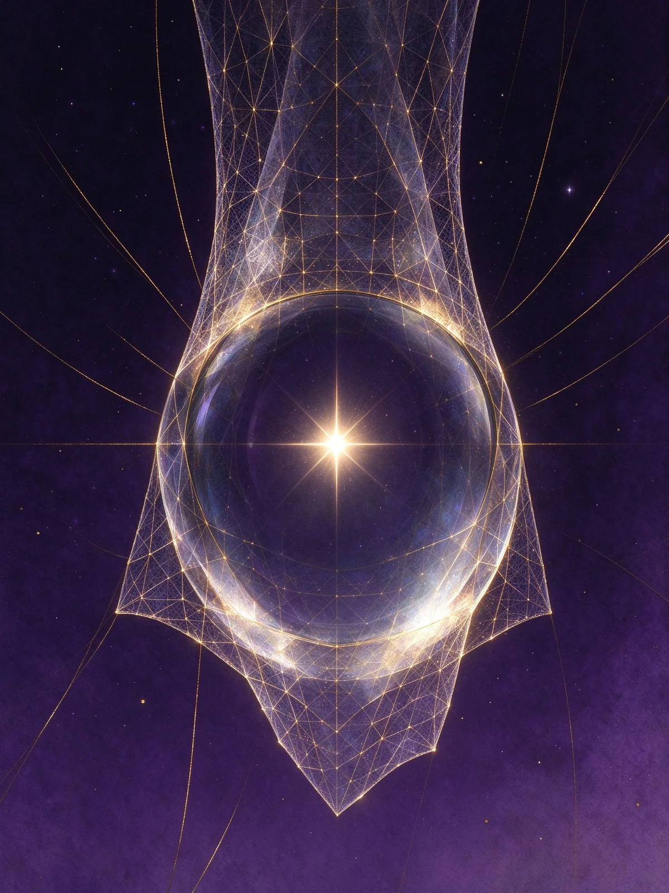
與八字、紫微、占星、MBTI 對照，並說明為什麼你會覺得準。
一個負責算、一個負責推導、一個負責好玩。全部免費，方法與限制全部公開。
勾選閘門，系統自動接通通道、點亮九個中心，並依公開規則推導類型與權威。
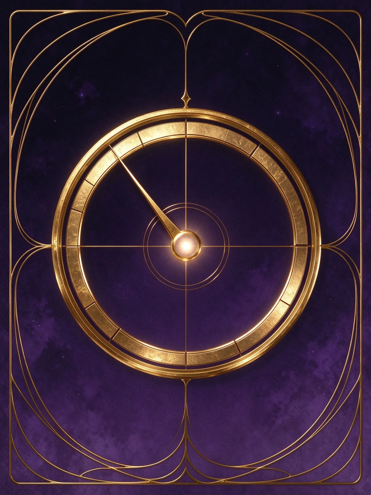
八個關於能量與人際的問題，推估你可能的類型。它不準，但我們會誠實告訴你為什麼。
類型是這套系統裡最容易上手、也最常被誤解的一欄。它只由薦骨與動力通道決定。
生產者等待回應、投射者等待邀請、顯示者告知、反映者等 28 天。這是指令，不是標籤。
情緒型不在當天拍板、薦骨型問是非題、脾型抓第一個念頭、G 型說出來才知道。
白色中心是你最容易被制約的地方，也是你讀懂別人的能力所在。
四週，只練一個策略，記錄結果。沒有實驗過的部分，都只是名詞。
「知識分析」四個字不是裝飾，它是這個站的分類原則。
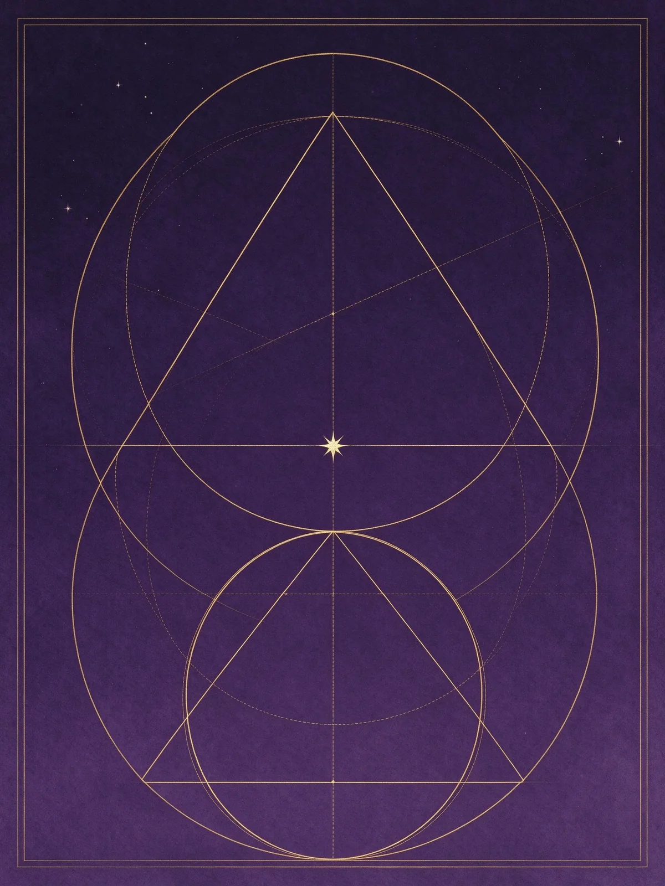
通道接通 → 中心定義 → 類型 → 權威。這是一條邏輯鏈，站內工具把每一步都攤開。
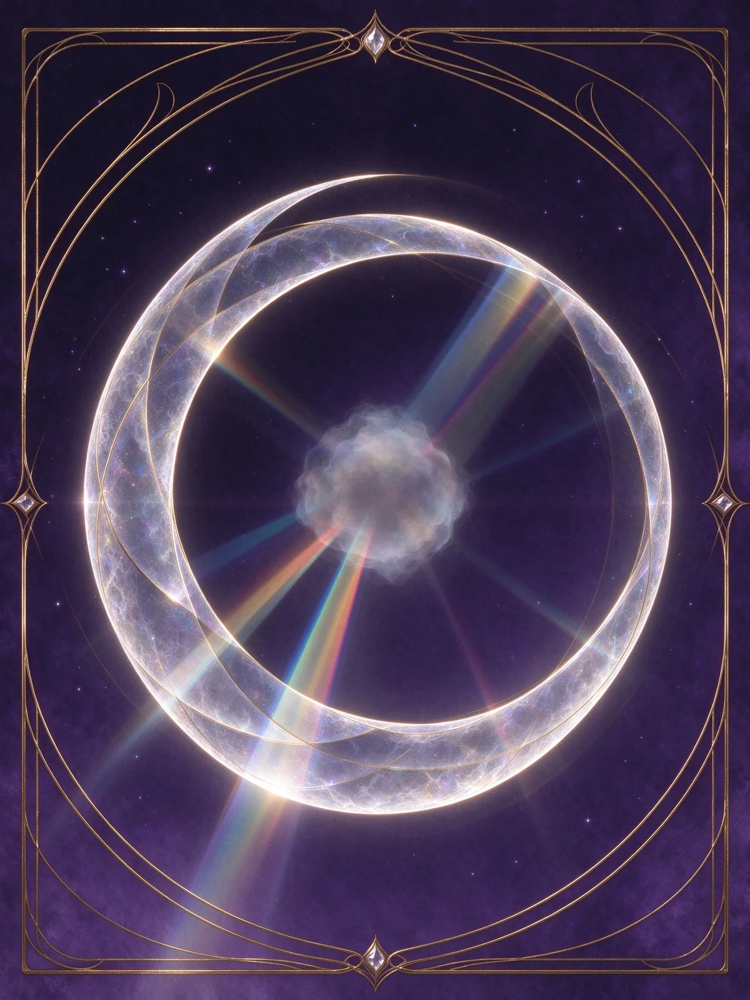
類型意義、通道主題、輪迴交叉。它們是有用的語言，但不是可檢驗的預測。
同一個人生議題，不同系統會從不同角度觀照。